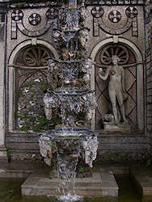

| In English |
| In English |
Grotten
|  |
| Bild: historische Grotte. |
 |
| Bild: historische Grotte. |
In vielen Sprachen wird das Wort Grotte uneinheitlich benutzt. So bezeichnet es oft auch natürliche Höhlen, dann meist aber eher kleinräumige mit sehr starkem Schmuck. In den letzten Jahren hat sich jedoch die Verwendung ausschliesslich für künstliche Hohlräume durchgesetzt. Der Begriff Höhle wird dagegen ausschliesslich für natürliche Hohlräume verwendet.
Grotten waren ein ein beliebtes Gestaltungselement für Gartenanlagen. Ein ganz bestimmter Typ von Grotten wurde wärend des 18. und 19. Jahrhundert gebaut. Die Gebäude wirkten leicht verfallen, waren verwinkelt, anscheinend unterirdisch. Die Wände sind flächendeckend mit Muscheln, Steinen, Fossilien, oder Mineralien geschmückt. Die aufwändigsten Grotten besitzen sogar Springbrunnen.
Eine Sonderform der Grotten sind die Lourdes Grotten. Während das Original, die Grotte von Lourdes, trotz des Namens eine Karsthöhle mit einer kleinen Quelle ist, sind die Lourdes Grotten künstliche, altarähnliche Aufbauten. Sie sind als Kopien der Originalgrotte gedacht, auch wenn sie meist wenig Gemeinsamkeiten mit dieser haben. Hier ist natürlich der katholische Symbolismus das zentrale Thema.
 Crystal Shrine Grotto
Crystal Shrine Grotto- Curraghmore House
- Dewstow Gardens and Grottoes
- The Grove Park Inn
- Margate Grotto or Shell Grotto
- Die historische Grotte in den Herrenhäuser Gärten
- Lourdes Grotto
 Auf Google nach "Grotten" suchen...
Auf Google nach "Grotten" suchen... Grotte – Wikipedia
(visited: 27-FEB-2011)
Grotte – Wikipedia
(visited: 27-FEB-2011){kind=link}